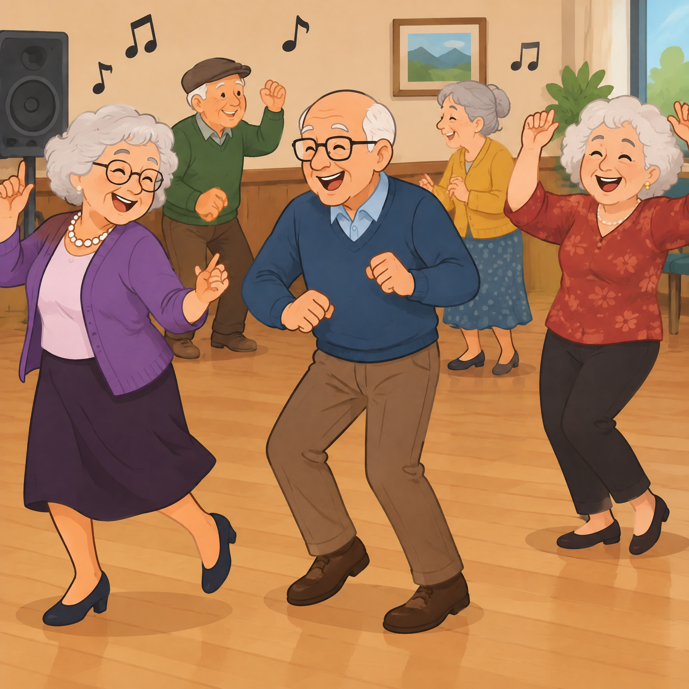
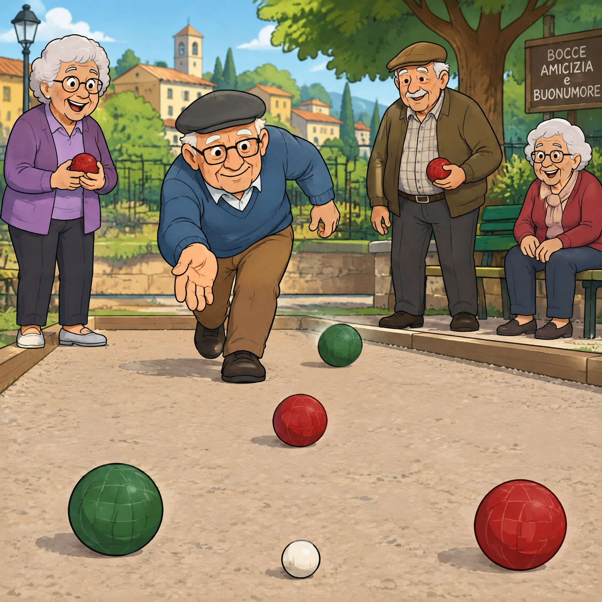
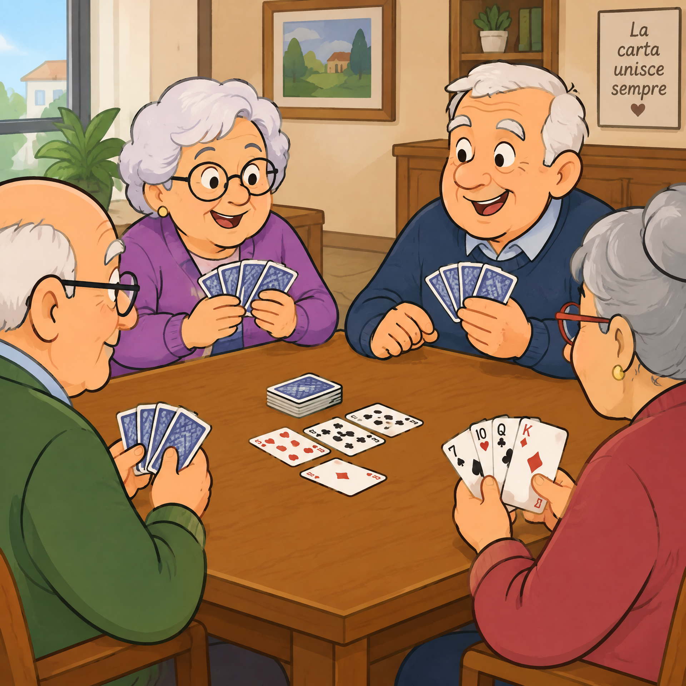
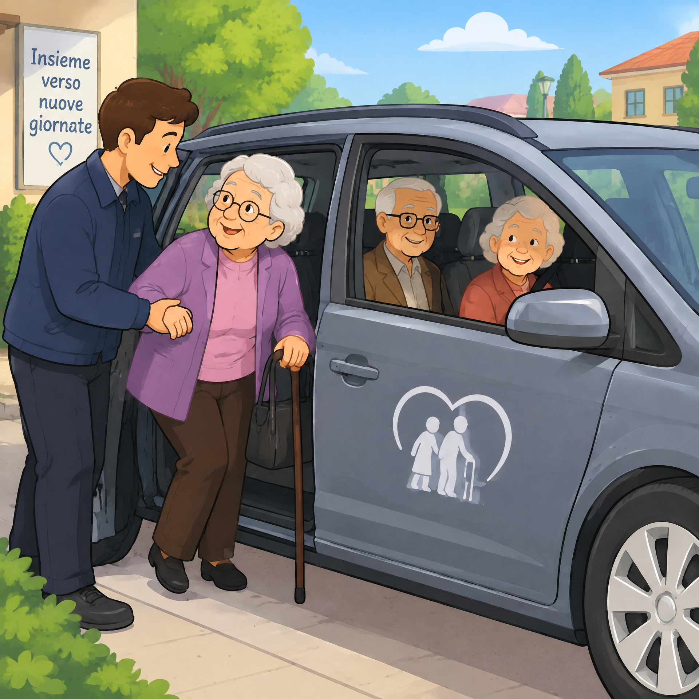
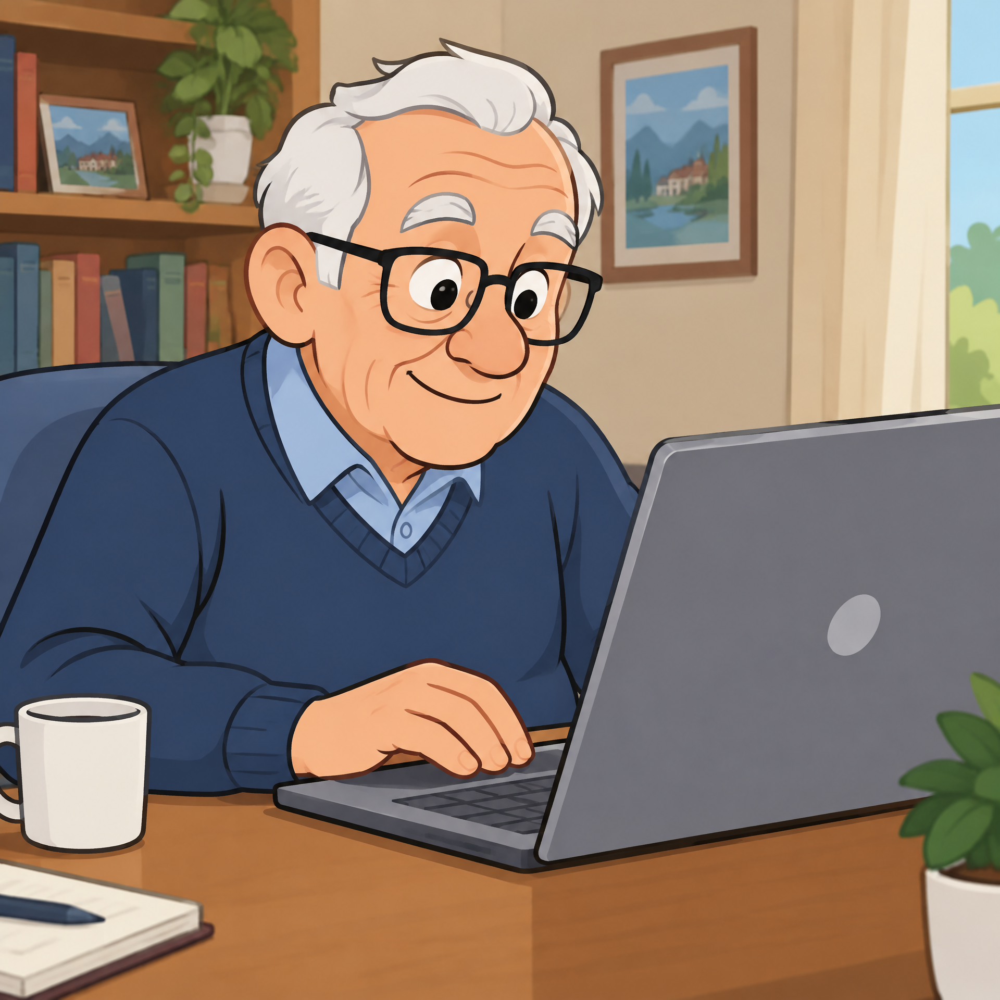
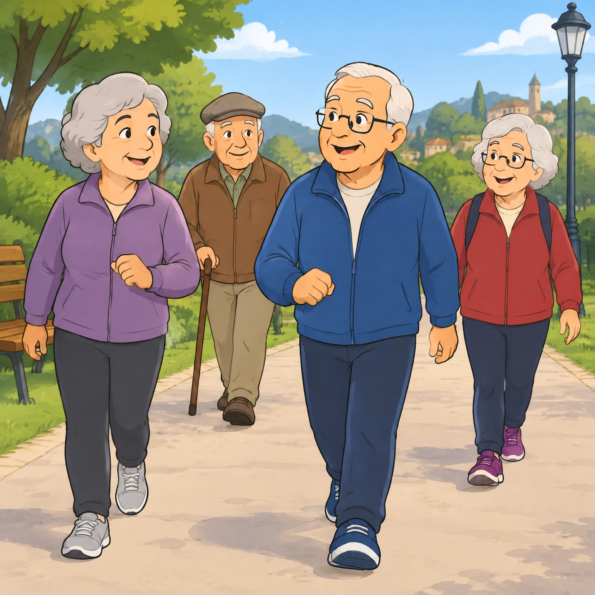

I nostri Progetti
AUSER TERRITORIALE ALTO CHIASCIO ODV-ETTS

Si balla

Si gioca a bocce

Si gioca a briscola

Vengono accompagnati gli anziani dove serve

Si insegna ad utilizzare le nuove tecnologie

Si fanno passeggiate di salute